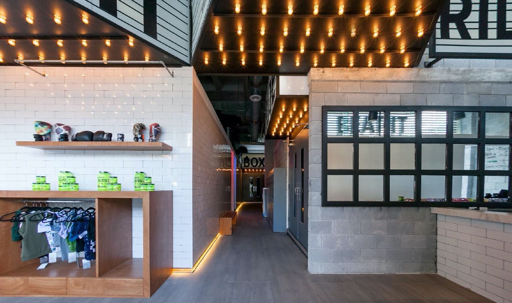
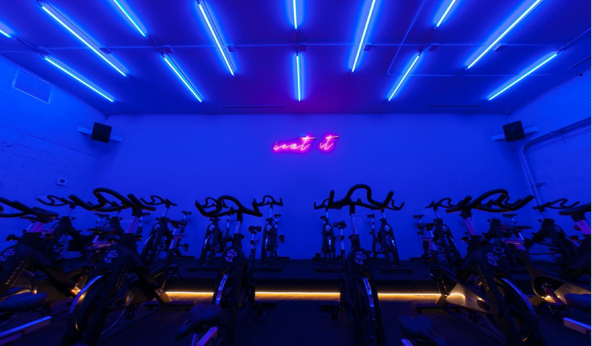
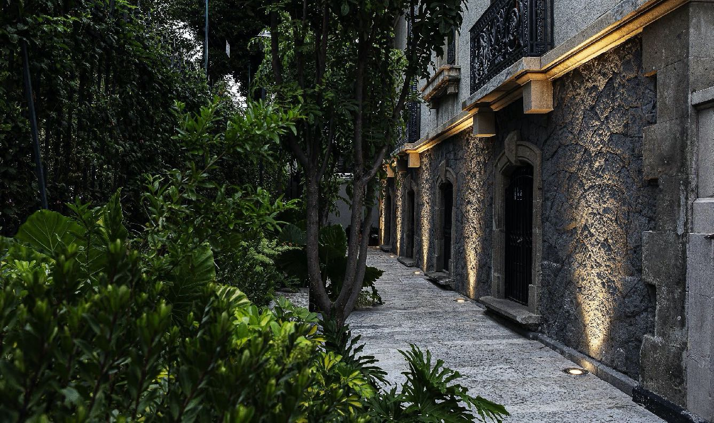

Here you’ll find examples that will clarify the concepts of ambient luminescence, focal glow, and play of brilliants. You can comment on them in the forum. A course by CONCEPTS BY RICHARD KELLY
01 / 14
U3-01
– Identify ambient luminescence, focal glow, and play of brilliants Lighting design: LumLum Photography: Patricia Carrington Corporate offices
2 / 14
U3-01
Black Taiga Lighting design: LumLum Photography: Rodrigo Chapa – Identify ambient luminescence, focal glow, and play of brilliants
3 / 14
U3-01
Solé Lighting design: LumLum Photography: Rodrigo de la Garza – Identify ambient luminescence, focal glow, and play of brilliants
4 / 14
U3-01
Marieta Lighting design: LumLum Photography: Rodrigo de la Garza – Identify ambient luminescence, focal glow, and play of brilliants
5 / 14
U3-01
Lighting design: LumLum Photography: Patricia Carrington Corporate offices – Identify ambient luminescence, focal glow, and play of brilliants
6 / 14
U3-01
Madre Café Lighting design: LumLum Photography: Eduardo Sánchez Bal – Identify ambient luminescence, focal glow, and play of brilliants
7 / 14
U3-01
Blend Stationi Lighting design: LumLum Photography: Rodrigo Chapa – Identify ambient luminescence, focal glow, and play of brilliants
8 / 14
U3-01
Lighting design: LumLum Photography: Patricia Carrington Beat It – Identify ambient luminescence, focal glow, and play of brilliants

9 / 14
U3-01
Lighting design: LumLum Photography: Patricia Carrington Beat It – Identify ambient luminescence, focal glow, and play of brilliants

10 / 14
U3-01
Lighting design: LumLum Photography: Grace Hoyle Bookstore and café at the Colegio Nacional – Identify ambient luminescence, focal glow, and play of brilliants
11 / 14
U3-01
Lighting design: LumLum Photography: Ricardo de la Concha Madre Café – Identify ambient luminescence, focal glow, and play of brilliants

12 / 14
U3-01
Photography: Light exercise – Identify ambient luminescence, focal glow, and play of brilliants